第3章
物体在偏心的圆锥曲线上的运动
命题11 问题6
物体沿椭圆运动，求指向椭圆焦点的向心力的规律。
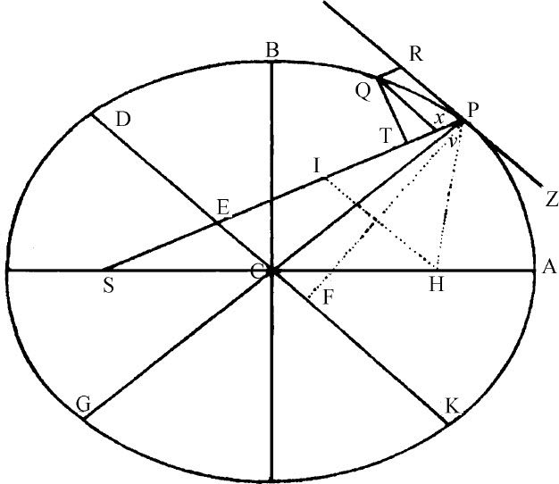
令S为椭圆焦点，作SP与椭圆直径DK相交于E，与纵坐标Qv 相交于x ；画出平行四边形Qx PR，显然EP等于长半轴AC：因为，由椭圆另一焦点H作HI平行于EC，由于CS，CH相等，ES，EI也将相等，所以EP是PS与PI的和的一半，即（因为HI与PR是平行线，角IPR与HPZ相等），PS与PH的和的一半，而PS与PH的和等于整个长轴2AC。作QT垂直于SP，并令L为椭圆的通径（the principal latus rectum ）（或
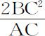
），即得到：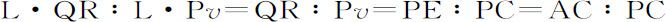
以及
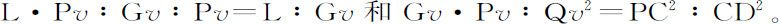
由引理7推论Ⅱ，当点P与Q重合时，Qv 2 ＝Qx 2 ，而Qx 2 或Qv 2 :QT2 ＝EP2 :PF2 ＝CA2 :PF2 ，而且（由引理12）＝CD2 :CB2 。将四个等式中对应项乘到一起并整理简化，得到L·QR:QT2 ＝AC·L·PC2 ·CD2 :PC·Gv ·CD2 ·CB2 ＝2PC:Gv ，因此AC·L＝2BC2 。但当点P与Q重合时，2PC与Gv 相等，所以量L·QR与QT2 同它们成正比，而且相等。将这些等式两边同乘
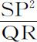
，则L·SP2 将等于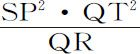
，所以（由命题6推论Ⅰ和Ⅴ）向心力反比于L·SP2 ，即反比于距离SP的平方。完毕。
另一种解法
因为使物体P沿椭圆运动的指向椭圆中心的力，（由命题10推论Ⅰ）正比于物体到椭圆中心C的距离CP，作CE平行于椭圆切线PR，如果CE与PS相交于E点，则使同一物体P环绕椭圆中一其他任意点S的力，将正比于
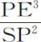
（由命题7推论Ⅲ），即如果点S是椭圆的焦点，因而PE是常数，将正比于SP2 的倒数。完毕。
我们曾用同样简捷的方式把第五个问题推广到抛物线和双曲线，在此本应也作同样的推广，但由于这个问题的重要性以及在以后的应用，我将用特殊的方法加以证明。
命题12 问题7
设一物体沿双曲线运动，求指向该图形焦点的向心力的定律。
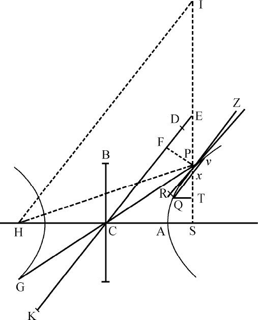
令CA，CB为双曲线的半轴，PG，KD是不同的共轭直径，PF是共轭直径KD的垂线，Qv 是相对于共轭直径GP的纵坐标。作SP与直径DK相交于E，与纵坐标Qv 相交于x ，画出平行四边形QRPx ，显然EP等于半横轴AC，因为由双曲线另一焦点H作直线HI平行于EC，由于CS，CH相等，ES，EI也将相等，所以EP是PS与PI的差的一半，即（因为IH与PR平行，角IPR，HPZ相等），PS与PH差的一半，这个差等于轴长2AC，作QT垂直于SP，令L等于双曲线的通径（即等于
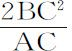
），即得到L·QR:L·Pv ＝QR:Pv ＝Px :Pv ＝PE:PC＝AC:PC，和L·Pv :Gv ·Pv ＝L:Gv ，以及Gv :Pv :Qv 2 ＝PC2 :CD2 。由引理7推论Ⅱ，当P与Q重合时，Qx 2 ＝Qv 2 ，而且，
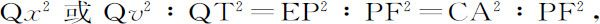
由引理12，＝CD2 :CB2 。
四个等式中对应项乘到一起，化简：
L·QR:QT2 ＝AC·L·PC2 ·CD2 :PC·Gv ·CD2 ·CB2 ＝2PC:Gv ，在此AC·L＝2BC2 ，但点P与Q重合时，2PC与Gv 相等，所以，量L·QR与QT2 正比于它们，而且相等，等式两边同乘
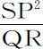
，得到L·SP2 等于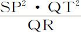
，所以（由命题6推论Ⅰ和Ⅴ）向心力反比于L·SP2 ，即反比于距离SP的平方。完毕。
另一种解法
求出指向双曲线中心C的力，它正比于距离CP，然而由此（根据命题7推论Ⅲ）指向焦点S的力将正比于
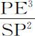
，即，由于PE是常数，正比于SP2 的倒数。完毕。
用相同方法可以证明，当物体的向心力变为离心力时，将沿共轭双曲线运动。
引理13
抛物线的隶属于其任何顶点的通径是该顶点到图形焦点距离的四倍。
作者已在论圆锥曲线内容中加以证明。
引理14
由抛物线焦点到其切线的垂线，是焦点到切点的距离，与顶点距离的比例中项。
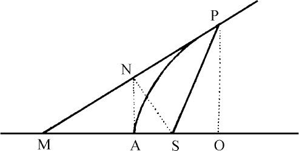
令AP为抛物线，S是其焦点。A是顶点，P是切点，PO是主轴上的纵坐标，切线PM与主轴相交于M点，SN是由焦点到切点的垂线：连接AN，因为直线MS等于SP，MN等于NP，MA等于AO，直线AN与OP相平行，因而三角形SAN在A的角是直角，并与相等的三角形SNM，SNP相似，所以，PS比SN等于SN比SA。
证毕。
推论Ⅰ．PS2 比SN2 等于PS比SA。
推论Ⅱ．因为SA是常数，SN2 正比于PS变化。
推论Ⅲ．任意切线PM，与由焦点到切线的垂线SN的交点，必落在抛物线顶点的切线AN上。
命题13 问题8
如果物体沿抛物线运动，求指向该图形焦点的向心力的定律。
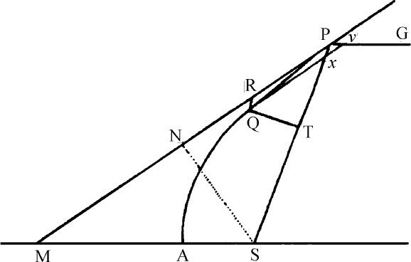
保留上述引理的图，令P为沿抛物线运动的物体，Q为物体即将到达点。作QR平行于SP，QT垂直于SP，再作Qv 平行于切线，与直径PG交于v ，与距离SP交于x 。因为三角形Pxv ，SPM相似，SP与SM是同一三角形的相等边，另一三角形的边Px 或QR与Pv 也相等，但（因为是圆锥曲线）纵坐标Qv 的平方等于由通径与直径小段Pv 组成的矩形，即（由引理13）等于矩形4PS·Pv 或4PS·QR；当点P与Q重合时，（由引理7推论Ⅱ）Qx ＝Qv 。所以，在这种情形下，Qx 2 等于矩形4PS·QR。但（因为三角形Qx T，SPN相似），
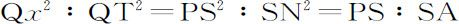
（由引理14推论Ⅰ）＝4PS·QR:4SA·QR
所以，由（欧几里得《几何原本》第五卷命题9），QT2 ＝4SA·QR。该等式两边同乘
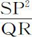
，则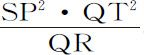
将等于SP2 ·4SA：所以，（由命题6推论Ⅰ和Ⅴ）向心力反比于SP2 ·4SA，即，由于4SA是常数，反比于距离SP的平方。完毕。
推论Ⅰ．由上述三个命题可知，如果任意物体P在处所P以任意速度沿任意直线PR运动，同时受到一个反比于由该处所到其中心的向心力的作用，则物体将沿圆锥曲线中的一种运动，曲线的焦点就是力的中心；反之亦然，因为焦点、切点和切线已知，圆锥曲线便决定了，切点的曲率也就给定了，而曲率决定于向心力和给定的物体速度。相同的向心力和相同的速度不可能给出两条相切的轨道。
推论Ⅱ．如果物体在处所P的速度这样给定，使得在无限小的时间间隔里通过小线段PR，而向心力在相同时间里使物体通过空间QR，则物体沿圆锥曲线中的一条运动，其通径在小线段PR，QR无限减小的极限状态下为
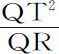
。在这两个推论中，我把圆周当做椭圆，并排除了物体沿直线到达中心的可能性。命题14 定理6
如果不同物体环绕公共中心运行，向心力都反比于其到该中心距离的平方，则它们的轨道的通径正比于物体到中心的半径在同一时间里所掠过的面积的平方。
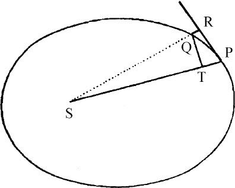
因为（由命题13推动Ⅱ）通径L在点P与Q重合的极限状态下等于量
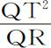
。但小线段QR在给定时间里正比于产生它的向心力，即（由假定条件）反比于SP2 。所以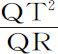
正比于QT2 ·SP2 ，即通径L正比于面积QT·SP的平方。证毕。
推论．因此，正比于由其轴长组成的矩形的整个椭圆的面积，正比于其通径的平方根与周期的乘积。因为整个椭圆面积正比于给定时间里掠过的面积QT·SP乘以周期。
命题15 定理7
在相同条件下，椭圆运动的周期正比于其长轴的3/2次方（in ratione sesquiplicata ）。
因为短轴是长轴与通径的比例中项，因此，长短轴的乘积等于通径的平方根与长轴的3/2次方的乘积。但两轴的乘积（由命题14推论）正比于通径的平方根与周期的乘积，双边同除以通径的平方根，即得到长轴的3/2次方正比于周期。
证毕。
推论．椭圆运动的周期与直径等于椭圆长轴的圆周运动的周期相等。
命题16 定理8
在相同条件下，通过物体作轨道切线，再由公共焦点作切线的垂线，则物体的速度反比于该垂线而正比于通径的平方根变化。
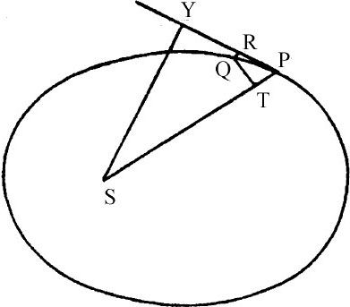
由焦点S作直线垂直于切线PR，则物体P的速度反比于量
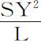
的平方根变化。因为速度正比于给定时间间隔内掠过的无限小弧长PQ，即（由引理7）正比于切线PR，也就是（因为有比例式PR:QT＝SP:SY）正比于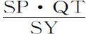
，或反比于SY，正比于SP·QT，而SP·QT是给定时间里掠过的面积，也就是（由命题14）正比于通径的平方根。证毕。
推论Ⅰ．通径正比于垂线的平方以及速度的平方变化。
推论Ⅱ．在距焦点最大和最小距离处，物体的速度反比于该距离而正比于通径的平方根，因为那些垂线此时就是距离。
推论Ⅲ．在距焦点最远或最近时，沿圆锥曲线的运动速度与沿以相同距离为半径的圆周的运动速度的比，等于通径的平方根与该距离二倍的平方根的比。
推论Ⅳ．沿椭圆做环绕运动的物体，在其与公共焦点的平均距离上，其速度与以相同距离做圆周运动的物体的速度相同，即（由命题4推论Ⅳ）反比于该距离的平方。因为此时垂线就是半短轴，也是该距离与通径的比例中项。令（诸半短轴的）比值的倒数乘以诸通径的平方根的比，即得到距离比值倒数的平方根。
推论Ⅴ．在同一图形，或甚至在不同图形中，诸通径是相等的，而物体的速度反比于由焦点到切线的垂线。
推论Ⅵ．在抛物线上，速度反比于物体到图形的焦点距离变化率的平方根，相对于该变化率，椭圆速度变化较大，而双曲线变化较小，因为（由引理14推论Ⅱ）由焦点到抛物线切线的垂线正比于距离的平方根。双曲线垂线变化较小，而椭圆的变化较大。
推论Ⅶ．在抛物线中，到焦点为任意距离的物体的速度，与以相同距离沿圆周作环绕运动的物体速度的比，等于数字2的平方根比1。对于椭圆该值较小，而双曲线较大。因为（由本命题推论Ⅱ）在抛物线顶点该速度适于这个比值，而（由本命题推论Ⅳ和命题4）在同一距离上都满足该比值。所以，对于抛物线，物体在其上各处的速度也等于沿以其距离的一半做圆周运动的速度。对于椭圆速度较小，而对于双曲线该速度较大。
推论Ⅷ．沿任何一种圆锥曲线运动的物体，其速度与以其通径的一半做圆周运动物体的速度的比，等于该距离与由焦点到曲线的切线的垂线的比，这可由推论Ⅴ得证。
推论Ⅸ．因而，由于（根据命题4推论Ⅵ）沿这种圆周运动的物体的速度与沿另一任意圆周运动的另一物体的速度比，反比于它们距离之比的平方根，所以，类似地，沿圆锥曲线运动物体的速度与沿以相同距离做圆周运动物体速度的比，是该共同距离以及圆锥曲线通径的一半，与由公共焦点到曲线切线的垂线的比的比例中项。
命题17 问题9
设向心力反比于物体处所到中心的距离的平方，该力的绝对值已知，求物体由给定处所以给定速度沿给定直线方向运动的路径。
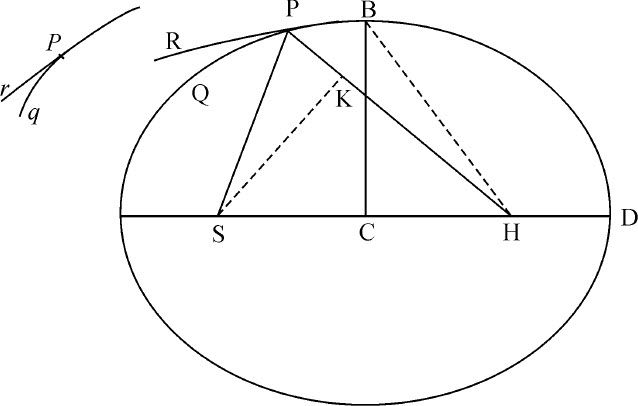
令向心力指向点S，使得物体p 沿任意给定轨道pq 运动；设该物体在处所p 的速度已知。然后，设物体P由处所P以给定速度沿直线PR的方向运动，但由于向心力的作用它立即偏离直线进入圆锥曲线PQ，这样，直线PR将与曲线在P点相切。类似地，设直线pr 与轨道pq 在p 点相切。如果设想一垂线由S落向切线，则圆锥曲线的通径（由命题16，推论Ⅰ）与该轨道通径之比，等于它们的垂线之比的平方与速度之比的平方的乘积，因而是给定的。令该通径为L，圆锥曲线的焦点S也已给定。令角RPH为角RPS的补角，另一个焦点位于其上的直线PH位置已定，作SK垂直于PH，并作共轭半轴BC，即得到
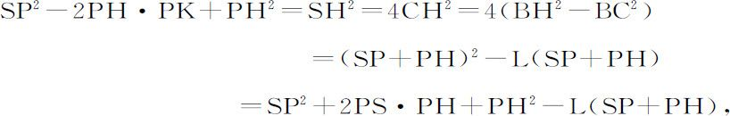
两边同加
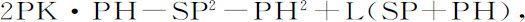
即有
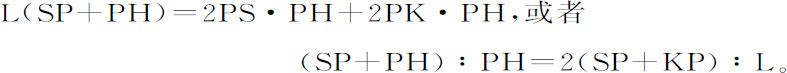
因此PH的长度和方向都已确定。即，在P处物体的速度如果使得通径L小于2SP＋2KP，则PH将与直线SP位于切线PR的同一侧；所以图形将是椭圆，其焦点S，H，以及主轴SP＋PH都已确定，但如果物体速度较大，使得通径L等于2SP＋2KD，则PH的长度为无限大，所以图形变为抛物线，其轴SH平行于直线PK，因而也得到确定。如果物体在处所P的速度更大，直线PH处于切线的另一侧，使得切线自两个焦点中间穿过，图形将变为双曲线，其主轴等于线段SP与PH的差，也是确定的。因为在这些情形中，如果物体所沿圆锥曲线确定了，命题11，12，13已证明，向心力将反比于物体到力的中心距离的平方，所以，我们就能正确地得出物体在该力作用下自给定处所P以给定速度沿给定直线方向运动所画出的曲线。
完毕。
推论Ⅰ．因此，在每一种圆锥曲线中，由顶点D，通径L和给定的焦点S，即可以通过令DH比DS等于通径比通径与4DS的差来求得另一个焦点H，因为比例式
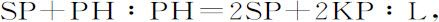
在本推论情形中变为
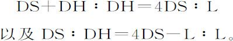
推论Ⅱ．所以，如果物体在顶点的速度为已知，则其轨道可以求出。即，令其通径与二倍距离DS的比，等于该给定速度与物体以距离DS做圆周运动的速度的比的平方（由命题16，推论Ⅲ），再令DH比DS等于通径比通径与4DS的差。
推论Ⅲ．如果物体沿任意圆锥曲线运动，并遭某种推斥作用被逐出其轨道，它以后运动所循的新轨道也可以求出。因为把物体原先的正常运动与单由推斥作用产生的运动加以合成，就可得到物体在被逐出点受给定直线方向的推斥作用后产生的运动。
推论Ⅳ．如果该物体连续受到某外力作用的骚扰，则可以通过采集该外力在某些点造成的变化，类推出它在整个序列中的影响，估计它在各点之间的连续作用，近似求出物体的运动。
附注
如果物体P受指向任意点R的向心力作用，沿以C为中心的任意圆锥曲线运动，并满足向心力定律；作CG平行于半径RP，与轨道切线相交于G点，则物体受到的力（根据命题10推论Ⅰ和附注，以及命题7推论Ⅲ）为
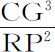
。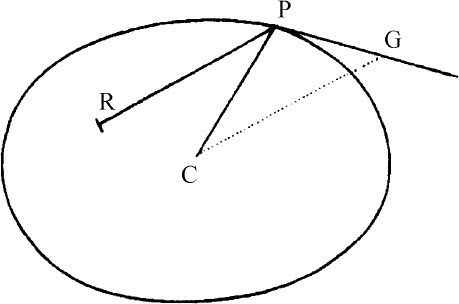